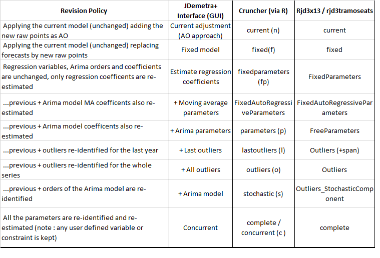
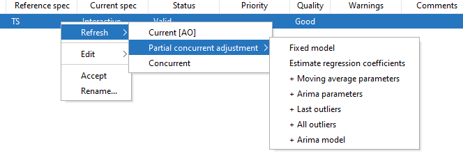

cruncher_and_param(
workspace = "D:/my_folder/my_ws.xml",
rename_multi_documents = FALSE,
policy = "stochastic", # name of the revision policy
log = my_log_file.txt
)SA: Revision policies
In this chapter
The sections below describe:
how to update seasonally adjusted series when new data is available
what is a revision policy in a seasonal adjustment context
the description of all the revision policies available in JDemetra+
how to implement a revision policy using the Graphical User Interface, R or the Cruncher.
Revision Policies
Definition and context
When raw data has been modified (extended and/or revised), the previous seasonal adjustment estimation needs updating. It can be redone from scratch (complete re-estimation) or update keeping fixed a predefined set of parameters already estimated. Eurostat’s Guidelines on seasonal adjustment (2015) recommend not to perform a complete re-estimation of the parameters on an infra-annual basis. The set of constraints on the parameters is called “revision policy” or “refresh policy”.
Overview
In X13-ARIMA and TRAMO-SEATS revision policies are ways to impose constraints on the pre-adjustment phase, while the decomposition phase (X-11 or Seats) will be entirely re-run on new data. The changes induced by X-11 re-estimation stem only from a revised linerarized series, while in Seats they are also induced by the arima model possible coefficient and/ or order changes.
The table below lists the available policies as well as their name for implementation with the graphical user interface (GUI), the cruncher or rjd3x13 ans rjd3tramoseats packages.

Implementation in GUI
To refresh results from previous estimation open your workspace, then SAprocessing click on a series to highlight it (or select several series), then right-click and choose Refresh, the following panel is displayed.

Display in results panel
Sections below detail, though an example, the changes in results display brought about by the use of a given revision policy.
Concurrent
Concurrent adjustment means that the model, filters, outliers, regression parameters and transformation type are all re-identified and the respective parameters and factors re-estimated every time new observations are available. This option in JDemetra+ means that a completely new model is identified, and the previous results are not taken into account, excepted for the user-defined parameters.
The picture below presents the initial model (on the left) and the results of the refreshment procedure with the Concurrent adjustment option (on the right). The transformation type has changed from none to log. The ARIMA model has been re-identified (it has changed from (0,1,1)(1,1,0) to (1,1,0)(0,1,1)). In contrast to the initial model, in the updated model trading day effects and a leap year effect are no longer included. Also the automatically identified outliers are not the same in both models.

Partial concurrent adjustment → Fixed model
The Partial concurrent adjustment → Fixed model strategy means that the ARIMA model, outliers and other regression parameters are not re-identified and the values of the parameters are fixed. In particular, no new outliers or calendar variables are added to the model as well as no changes neither in the calendar variables nor in the outliers’ types are allowed. The transformation type remains unchanged.
The picture below presents the initial model (on the left) and the results of the refreshment procedure with the Partial concurrent adjustment → Fixed model option (on the right). The parameters of the ARIMA part are not estimated and their values are the same as before. The trading days and outliers are fixed too and no new regression effects are identified.

Partial concurrent adjustment → Estimate regression coefficients
The Partial current adjustment → Estimate regression coefficients option means that the ARIMA model, outliers and other regression parameters are not re-identified. The coefficients of the ARIMA model are fixed, other coefficients are re-estimated. In particular, no new outliers or calendar variables are added to the model as well as no changes neither in the calendar variables nor in the outliers’ types are allowed. The transformation type remains unchanged.
The picture below presents the initial model (on the left) and the results of the refreshment procedure with the Partial concurrent adjustment → Estimate regression coefficients option (on the right). The number of estimated parameters is 16 in the initial model and 14 in the revised model (the parameters of the ARIMA model are not estimated.

The Partial concurrent adjustment→ Estimate regression coefficients revision policy results
Partial concurrent adjustment → Estimate regression coefficients + Arima parameters
The Partial concurrent adjustment → Estimate regression coefficients + Arima parameters strategy means that the ARIMA model, outliers and other regression parameters are not re-identified. All parameters of the Reg-ARIMA model are re-estimated but the explanatory variables remain the same. The transformation type remains unchanged.
The picture below presents the initial model (on the left) and the results of the refreshment procedure with the Partial concurrent adjustment → Estimate regression coefficient + Arima parameters option (on the right). The parameters of the ARIMA part have been re-estimated and their values have been updated. Also regression coefficients have been re-estimated and the number of estimated coefficients in the revised model is the same as in the initial model (i.e. 16 estimated coefficients). The structure of the model remains unchanged while all coefficients have been updated.

Partial concurrent adjustment → Estimate regression coefficients + outliers
The Partial concurrent adjustment → Estimate regression coefficients + outliers option means that the ARIMA model and regression parameters, except outliers, are not re-identified. The parameters of these variables, however, are re-estimated. All outliers are re-identified, i.e. the previous outcome of the outlier detection procedure is not taken into account and all outliers are identified and estimated once again. The transformation type remains unchanged.
The picture below presents the initial model (on the left) and the results of the refreshment procedure with the Partial concurrent adjustment → Estimate regression coefficients + outliers option (on the right). The parameters of the ARIMA part have been re-estimated and their values have been updated. Also regression coefficients for the calendar variables have been re-estimated. In the revised model there is no Prespecified outliers section. Instead, the outliers were re-identified.

Partial concurrent adjustment → Estimate regression coefficients + Arima model
The Partial concurrent adjustment → Estimate regression coefficients + Arima model option means that the ARIMA model, outliers and regression variables (except the calendar variables) are re-identified. All parameters are re-estimated. The transformation type remains unchanged.
The picture below presents the initial model (on the left) and the results of the refreshment procedure with the Partial concurrent adjustment → Estimate regression coefficients + Arima model option (on the right). The ARIMA part has been re-identified (a change from (2,1,0)(0,1,1) to (0,1,1)(1,1,1)). Also the regression coefficients for the calendar variables have been re-estimated. In the revised model there is no Prespecified outliers section. Therefore, the outliers were re-identified.

Partial concurrent adjustment → Estimate regression coefficients + Last outliers
The Partial concurrent adjustment → Estimate regression coefficients + Last outliers strategy means that the ARIMA model, outliers (except for the last year of the sample) and other regression parameters are not re-identified. All parameters of the Reg-ARIMA model are re-estimated. The software tests for outliers in the last year of the data span and will include in the model those which are statistically significant. The transformation type remains unchanged.
The picture below presents the initial model (on the left) and the results of the refreshment procedure with the Partial concurrent adjustment → Estimate regression coefficients + Last outliers option (on the right). The parameters of the ARIMA part have been re-estimated and their values have been updated. Also the regression coefficients have been re-estimated. The number of estimated coefficients in the revised model is larger than the initial model because an additional outlier has been identified in the last year of the data span.

Implementation with the cruncher
In a production process, it might be suitable to use the cruncher in order to automatically update workspaces. When using an R package (rjwsacruncher`` orJDCruncher`) to do so, you will just need to specify the policy’s name as shown below. Available policies and names are detailed in the #Overview section.
Implementation in R
Implementing refresh policies is a new v3.x feature. Two options are available
using rjd3x13 or rjd3tramoseats directly on TS objects in R
refreshing a workspace with rjd3workspace
When performing seasonal adjustment directly in R with rjd3x13 or rjd3tramoseats, you will need to refresh the “result_spec” yielded by the previous estimation with the selected policy.
Available policies and names are detailed in here.
More explanations and full documentation of